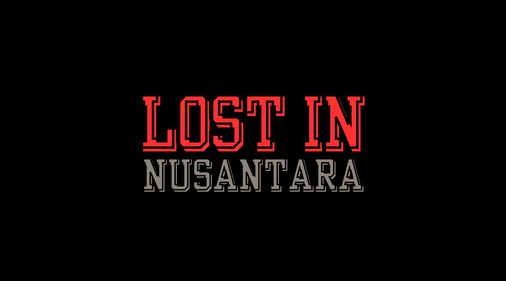

My Portfolio

Lawang Sewu
Lawang Sewu is an endless 2D game where we have to avoid closed doors by typing commands. This game is made with Unity Engine. This project is for GameJams 2023 from Indie Game Group Indonesia.


Lost In Nusantara
Lost In Nusantara is a 2D puzzle horror game where you must find keys to open a portal and fight the final boss. This project is made by three person using Unity Engine for college final assignment.

Space Invader 2D
Space Invader 2D is a game where player will control an alien spaceship to fight aliens. This game is made by one person using Unity Engine for one of four college final assignment.